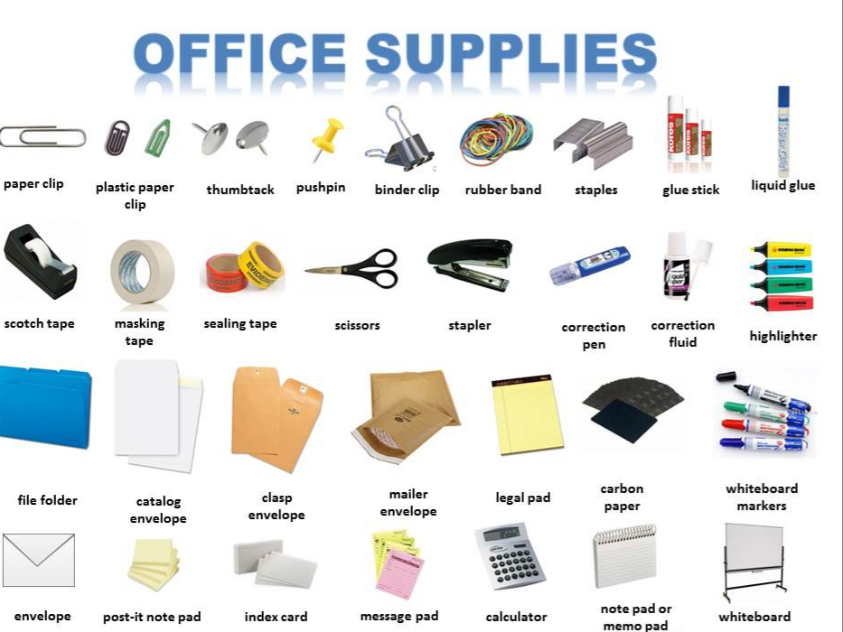
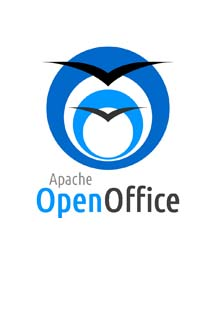

DevOps
The Web
Categorie
Multimedia
Profiel Content Creator
tooling Kantoor Automatisering

Kantoor automatisering betreft softwarepakket, ook wel office pakket of office suite genoemd. Het is een verzameling software, een software suite, die helpt bij de kerntaken van een kantooromgeving, zoals het lezen en schrijven van e-mail en documenten, en het maken van berekeningen.
→ zie: Wikipedia Kantoor Software
Kantoor Automatisering kenmerken
- Tekstverwerker- Spreadsheet
- Presentatiesoftware
- Notitiesoftware
- Graphics suite
- Formulesoftware
- Databasemodeleringsoftware
- Communicatiesoftware
- Programmatuur voor projectplanning
- Desktoppublishing
- Uitvoer in PDF-formaat
- E-mailclient
- Personal information manager
- HTML-editor
- Groupware
- Tooling voor Kantoor Automatisering
-
Alternatieve niét FOSS tooling is Ability Office, Breadbox Office, EasyOffice Framework, Gobe Productive, GoBe Productive, Microsoft Office, Microsoft Office for Mac, Office365, WordPerfect Office, G Suite, MobiSystems OfficeSuite, SoftMaker Office, Hancom Office Suite & ThinkFree Office, WPS Office (free), iWork Apple Inc.'s (macOS), MarinerPak. MobiSystems OfficeSuite (Android, iOS and Windows), Microsoft Office Mobile (Android, iOS and Windows Mobile/Phone), Documents To Go (Android and others), Google Docs, iWork (iOS), WPS Office (free, topper wordt vaak gebruikt maar is niet OpenSource dus niet AVG compliant), Picsel Smart Office, Polaris Office, QuickOffice, QuickOffice HD Pro (Android, iOS), SoftMaker Office, ThinkFree Office Mobile. Wél FOSS zijn:
- LibreOffice
-
 LibreOffice is een free OpenSource kantoorsoftwarepakket ontwikkeld door The Document Foundation en beschikbaar voor Windows, macOS, Android, Linux en Unix. Deze programma's kunnen bestanden in verschillende formaten openen en opslaan. Standaard worden documenten opgeslagen in het OpenDocument formaat, dat in essentie een ZIP-archief van XML-bestanden (en eventueel bijhorende afbeeldingen) is. Het default format kan ingesteld worden naar .docx; Ook bestaat er de mogelijkheid om pdf te exporteren.
LibreOffice is een free OpenSource kantoorsoftwarepakket ontwikkeld door The Document Foundation en beschikbaar voor Windows, macOS, Android, Linux en Unix. Deze programma's kunnen bestanden in verschillende formaten openen en opslaan. Standaard worden documenten opgeslagen in het OpenDocument formaat, dat in essentie een ZIP-archief van XML-bestanden (en eventueel bijhorende afbeeldingen) is. Het default format kan ingesteld worden naar .docx; Ook bestaat er de mogelijkheid om pdf te exporteren.
→ zie: Website LibreOffice tbv download - Kenmerken
-
- Writer voor tekstdocumenten en HTML-documenten vergelijkbaar met MS Word
- Calc voor rekenbladen (spreadsheets) vergelijkbaar met MS Excel
- Base voor databases vergelijkbaar met MS Access
- Draw voor tekeningen vectortekeningen, vergelijkbaar met MS Visio
- Impress voor presentaties vergelijkbaar met MS PowerPoint
- Math voor formules - OpenOffice
-
 OpenOffice omvat een tekstverwerker (Writer), een spreadsheet (Calc), een presentatie applicatie (Impress), een tekening applicatie (Draw), een formule editor (Math) en een database management applicatie (Base). Het standaardbestandsformaat was het OpenDocument formaat (ODF), een ISO / IEC-standaard, afkomstig van OpenOffice.org. Het kan ook een breed scala aan andere bestandsindelingen lezen, met speciale aandacht voor die van Microsoft Office.
→ zie: Website OpenOffice tbv download - Kenmerken
-
- Writer een tekstverwerker analoog aan MS Word of WordPerfect
- Calc voor spreadsheet analoog aan MS Excel of Lotus 1-2-3
- Impress voor presentatieprogramma analoog aan MS PowerPoint of Apple Keynote
- Draw voor vectorafbeeldingeneditor qua functies vergelijkbaar is met tekenfuncties in MS Office
- Math voormaken en bewerken van wiskundige formules, analoog aan MS Equation Editor
- Base voor databasebeheer analoog aan MS Access en kan fungeren als front end voor verschillende databasesystemen, waaronder Access-databases (JET), ODBC-gegevensbronnen, MySQL en PostgreSQL
Voor compatibiliteit van LibreOffice met MS Office zijn in onderstaande video enkele tips, waaronder downloaden van MS fonts. Overigens, bij installatie van Linux Mint zijn de MS fonts voorgeinstalleerd. Met name 2e helft video geeft handige migratie tips voor enkele settings om het pakket meer een MS Office look-and-feel te geven
→ zie: YouTube Videotorial LibreOffice